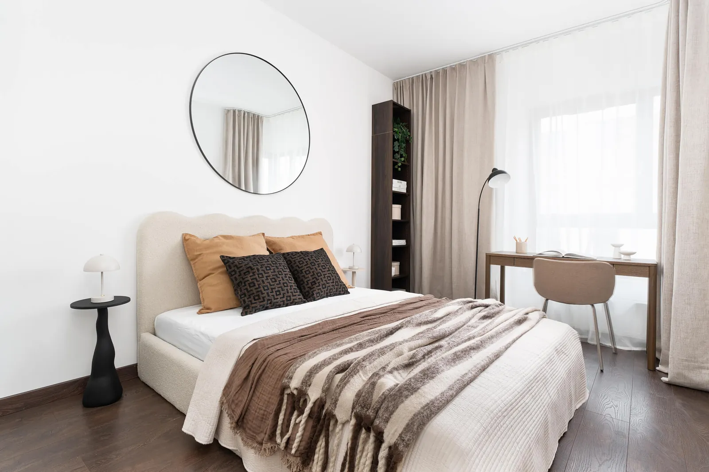

Wynajem długoterminowy
Najemca zostaje tu na lata, więc stawiam na funkcjonalność i trwałość, a nie tylko na efekt na zdjęciu. Taki najemca rzadziej szuka nowego mieszkania po pierwszej umowie, a Ty masz mniej przestojów.
- Wygodne, solidne meble i miejsce do pracy zdalnej
- Neutralne, ciepłe kolory, w których każdy poczuje się u siebie
- Przechowywanie i światło dobrane do codziennego życia
- Meblujemy wnętrze, dekoracji zostawiamy jak najmniej